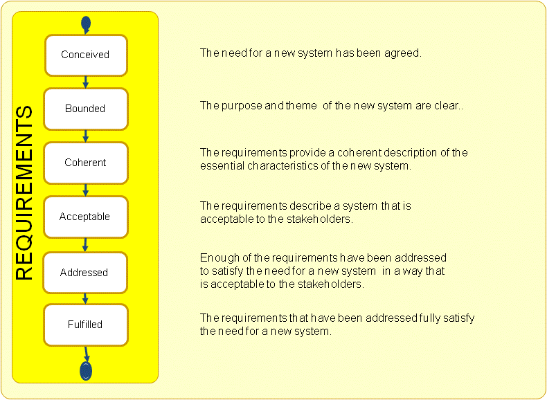

Essence Kernel
Requirements: What the software system must do to address the opportunity and satisfy the stakeholders.
It is important to discover what is needed from the software system, share this understanding among the stakeholders and the team members, and use it to drive the development and testing of the new system.
The requirements capture what the stakeholders want from the system. They define what the system must do, but not necessarily how it must do it. They describe the value the system will provide by addressing the opportunity and how the opportunity will be pursued by the production of a new software system. They also scope and constrain the work by defining what needs to be achieved.
The requirements are captured as a set of requirement items. The requirement items can be communicated and recorded in various forms and at various levels of detail. They may be communicated explicitly as a set of extensive requirements documents or more tacitly in the form of conversations and brain-storming sessions. The requirement items themselves are always documented and tracked. The documentation can take many forms and be as brief as a one-line user story or as comprehensive as a use case.
As the development of the system proceeds, the requirements evolve and are constantly re-prioritized and adjusted to reflect the changing needs of the stakeholders. Much that is implicit at first is made explicit later by adding more detailed requirement items such as well-defined quality characteristics and test cases. This allows the requirements to act as a verifiable specification for the software system. Regardless of how the requirement items are captured it is essential that the software system produced can be shown to successfully fulfill the requirements. This is why requirements play such an essential role in the testing of the system. As well as providing a definition of what needs to be achieved, they also allow tracking of what has been achieved. As the testing of each requirement item is completed it can be individually checked off as done, and the requirements as a whole can be looked at to see if the system produced sufficiently fulfils the requirements and whether or not work on the system is finished.
It is important that the overall state of the requirements is understood as well as the state of the individual requirement items. If the overall state of the requirements is not understood then it will be impossible to 1) tell when the system is finished, and 2) judge whether or not an individual requirement item is a requirement for this system or another system.
During the development of a software system the requirements progress through several state changes. As presented in the figure below, they are conceived, bounded, coherent, acceptable, addressed, and fulfilled. These states focus on the evolution of the team’s understanding of what the proposed system must do, from the conception of a new set of requirements as an initial idea for a new software system through their development to their fulfillment by the provision of a usable software system.

The requirements start in the conceived state when the need for a new software system has been agreed. The stakeholders can hold differing views on the overall meaning of the requirements. However, they all agree that there is a need for a new software system and a clear opportunity to be pursued.
Before too much time is spent collecting and detailing the individual requirement items the requirements as a whole must be bounded. To bound the requirements, the overall scope of the new system, the aspects of the opportunity to be addressed, and the mechanisms for managing and accepting new or changed requirement items all need to be established. In the bounded state there may still be inconsistencies or ambiguities between the individual requirement items. However, the stakeholders now have a shared understanding of the purpose of the new system and can tell whether or not a request qualifies as a requirement item. They also understand the mechanisms to be used to evolve the requirement items and remove the inconsistencies. Once the requirements are bounded there is a shared understanding of the scope of the new system and it is safe to start implementing the most important requirement items.
Further elicitation, refinement, analysis, negotiation, demonstration and review of the individual requirement item leads to a coherent set of requirements, one that clearly defines the essential characteristics of the new system. The requirement items continue to evolve as more is learnt about the new system and its impact on its stakeholders and environment. No matter how much the requirement items change, it is essential that they stay within the bounds of the original concept and that they remain coherent at all times.
The continued evolution of the requirements leads to the capture of an acceptable set of requirements, one that defines a system that will be acceptable to the stakeholders as, at least, an initial solution. The requirements may only describe a partial solution; however the solution described is of sufficient value that the stakeholders would accept it for operational use. The number of requirement items that need to be agreed for the requirements to be acceptable to the stakeholders can vary from one to many. When changing a mature system it may be acceptable to just address one important requirement item. When building a replacement system a large number of requirement items will need to be addressed.
As the individual requirement items are implemented and a usable system is evolved, there will come a time when enough requirements have been implemented for the new system to be worth releasing and using. In the addressed state the amount of requirements that have been addressed is sufficient for the resulting system to provide clear value to the stakeholders. If the resulting system provides a complete solution then the requirements may advance immediately to the fulfilled state.
Usually, when the addressed state is achieved the resulting system provides a valuable but incomplete solution. To fully address the opportunity, additional requirement items may have to be implemented. The shortfall may be because an incremental approach to the delivery of the system was selected, or because the missing requirements were difficult to identify before the system was made available for use.
In the fulfilled state enough of the requirement items have been implemented for the stakeholders to agree that the resulting system fully satisfies the need for a new system, and that there are no outstanding requirement items preventing the system from being considered complete.
Understanding the current and desired state of the requirements can help everyone understand what the system needs to do and how close to complete it is.
The need for a new system has been agreed.
The alpha is in this state when:
The purpose and theme of the new system are clear.
The alpha is in this state when:
The requirements provide a coherent description of the essential characteristics of the new system.
The alpha is in this state when:
The requirements describe a system that is acceptable to the stakeholders.
The alpha is in this state when:
Enough of the requirements have been addressed to satisfy the need for a new system in a way that is acceptable to the stakeholders.
The alpha is in this state when:
The requirements that have been addressed fully satisfy the need for a new system.
The alpha is in this state when:
N/A
N/A
Copyright © 2012 Ivar Jacobson International AB, Florida Atlantic University, Fujitsu, Impetus, International Business Machines Corporation, KTH Royal Institute of Technology, Metamaxim Ltd., PEM Systems, Stiftelsen SINTEF, University of Duisburg-Essen. , ver. 1.0.3